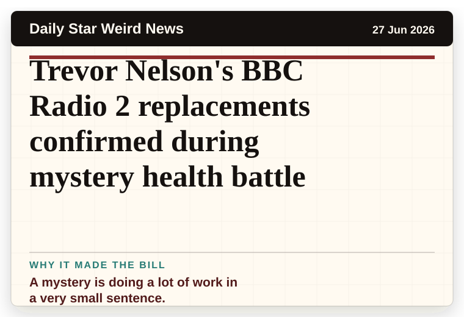
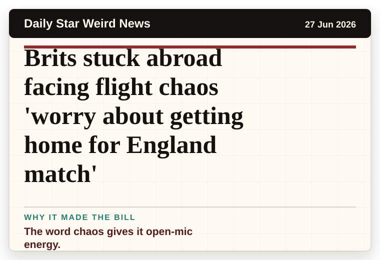
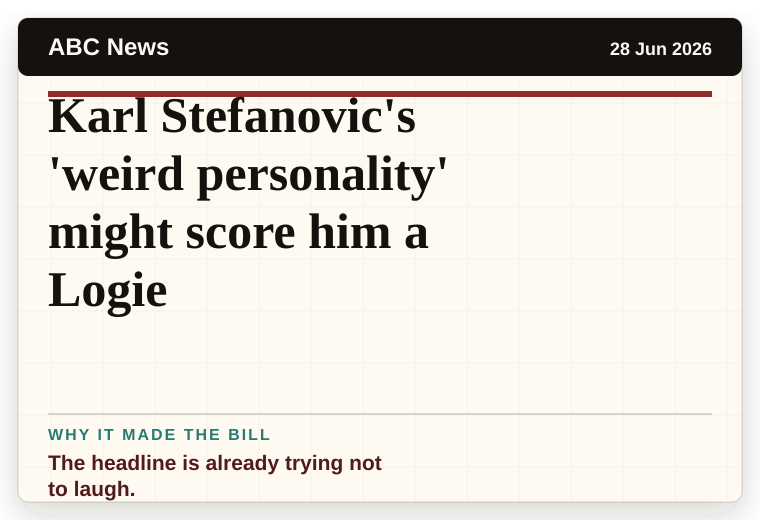
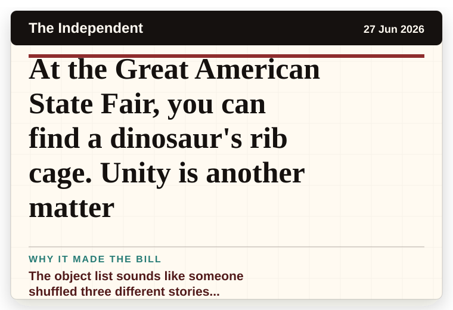
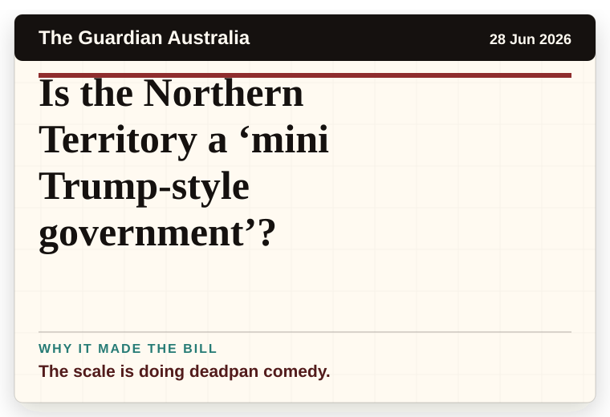
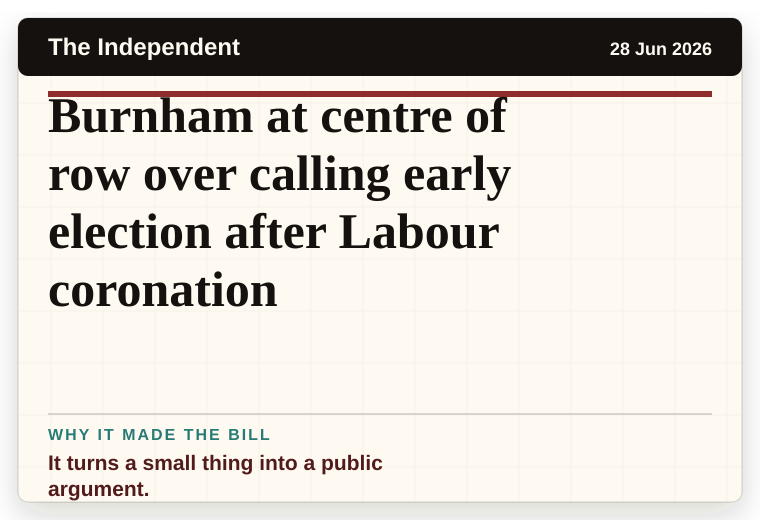
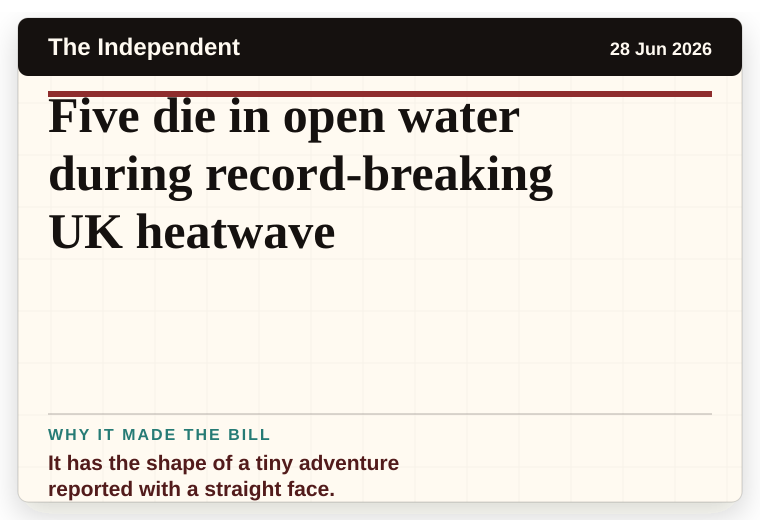
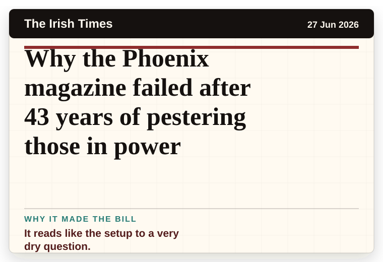

NT News
Australia
UFO hunting in the Australian Outback: Finding the hidden ‘alien airport’
A wonderfully specific detail has taken centre stage.
The latest daily picks, linked back to the original sources. Search the room, pick a source, or follow a headline out to the full story.
Record updated: 28 Jun 2026, 08:35 AM AEST
Showing 19 headline candidates from the refresh run completed on 28 Jun 2026, 08:35 AM AEST.
A wonderfully specific detail has taken centre stage.

The headline is already trying not to laugh.

The second half quietly trips over the first half.

It has the shape of a tiny adventure reported with a straight face.

A wonderfully specific detail has taken centre stage.

A mystery is doing a lot of work in a very small sentence.

The word chaos gives it open-mic energy.

The scale is doing deadpan comedy.

The headline is already trying not to laugh.

A wonderfully specific detail has taken centre stage.

A mystery is doing a lot of work in a very small sentence.

The word chaos gives it open-mic energy.

The headline is already trying not to laugh.

The object list sounds like someone shuffled three different stories together.

The scale is doing deadpan comedy.

It turns a small thing into a public argument.

It has the shape of a tiny adventure reported with a straight face.

It has the shape of a tiny adventure reported with a straight face.

It reads like the setup to a very dry question.